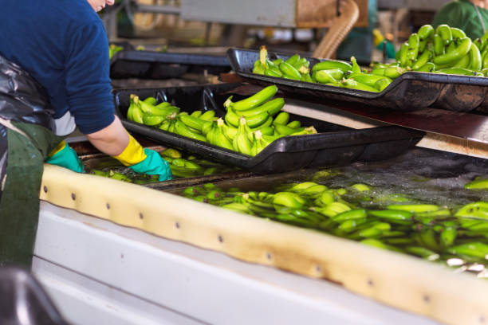

Bakul Buah merupakan sebuah perusahaan penyuplai buah-buahan tercepat di Surabaya. Perusahaan ini menjamin buah-buahan yang dihasilkannya berkualitas tinggi dengan tingkat kecacatan hanya 1%. Buah-buahan yang dihasilkan, tentunya berkualitas tinggi dengan mematok harga yang nyaman di kantong. Perusahaan ini didirikan pada tahun 1990 oleh kudua fonder kita, yaitu Irfani dan Asfa.